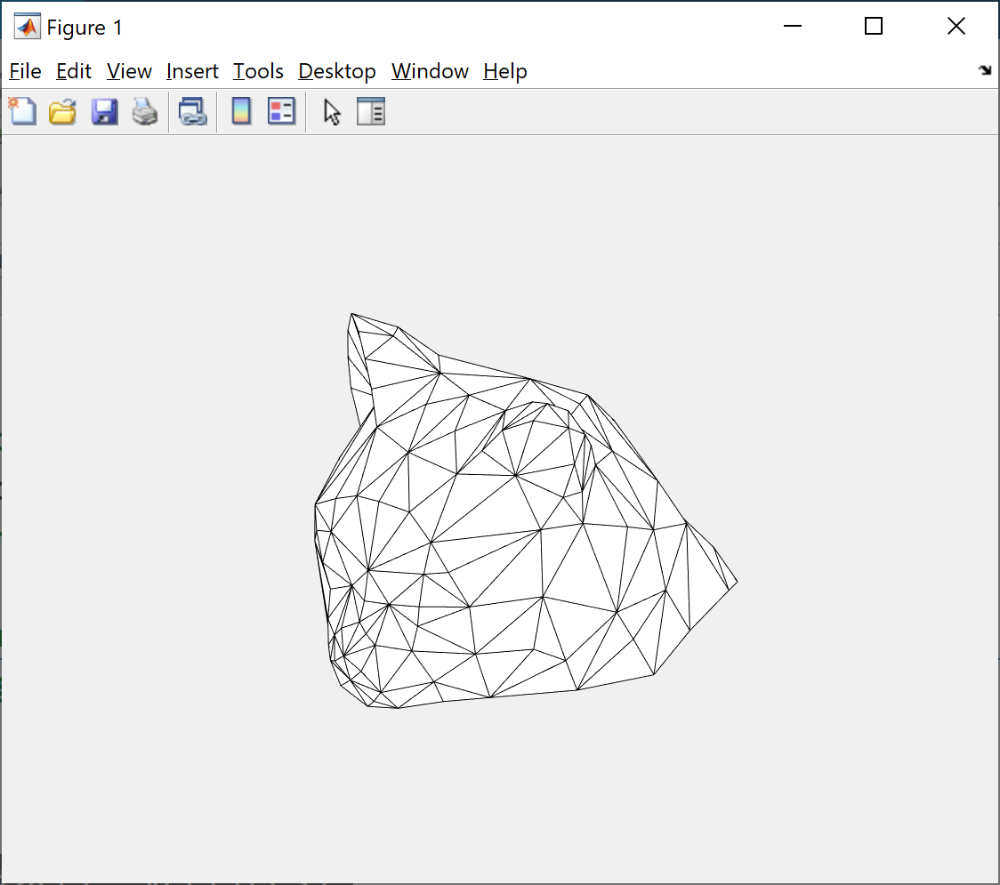
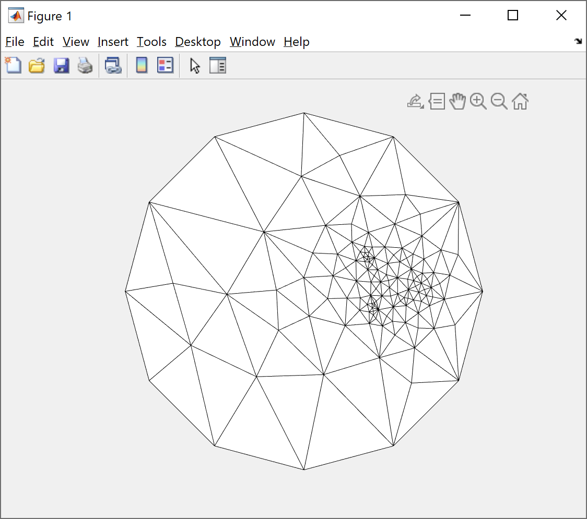

框架分析
有函数
- readObj();
- findBoundary();
- drawmesh();
三者作用均可望文生义. 关于输入输出，讨论如下.
findBoundary();
输出变量 B 和 H.
B - list of boundary vertex ID's in CCW order
此处CCW order 不是是否为 ClockWise order? 文献中算法要求Anti-clockwise order.
H 未见说明，对.obj文件使用后为空.
drawmesh();
完全没有解释. 根据代码推断可知
color: 网格面颜色.
ecolor: 网格边颜色.
直接尝试使用 readobj 得到的数据. 发现 t 为网格面，x 为网格顶点.

Tutte Embedding 算法实现
算法思路
我们首先需要将边界的顶点依照逆时针序对应到某二维图形上去. 我们先选取单位圆.
需要求得每个边界顶点在此二维平面的坐标.
需要知道某内部顶点的相邻顶点\(V_i\)个数
- 若\(V_i\)为界点 -> rhs - \(u_i/v_i\).
- 若\(V_i\)为内点 -> 此行对应列赋为-1.
将二维平面坐标传
参给 drawmesh() 即可.
算法实现
选取单位圆，我们根据角度给界点坐标赋值. 这是很方便的.
1 | BoundaryVertices = BoundaryVertices'; |
给定顶点，我们需要知道其临近界点. 注意到只要同处一个面，任意两个点均是邻近的.
1 | function adjacentPoints = findAdjacent(vertex, facet) |
注意需要除去该顶点本身.
而后我们构造方程组. 这里为了方便，我们对顶点是否为界点做了标注.
1 | % 标注是否界点 |
同时，对内点进行了编号以便索引. 分别对俩个维度的坐标求解后，将坐标替换成方程组的解.
1 | % 查找给定顶点的邻近顶点 |
这就完成了算法.
结果
结果展示如下.
